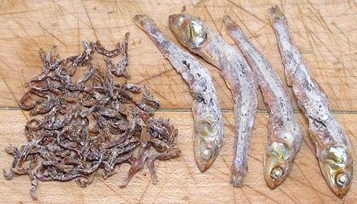

Dried Anchovies

[Mareun-myeolchi (Korea); Ikan Bilis Sabah (Malaysia); Dilis
(Philippine Stolephorus commersonii)]
This form of dried fish is used very widely in East and Southeast
Asia. They come in many sizes, the photo showing some of the smallest
(0.68 inch long) and largest (2.5 inches long) common sizes. These
were purchased at a Korean market in Los Angeles. The small ones are
often crushed to paste with some water to make an impromptu fish sauce
for use in soups, stir fries and the like. The larger are used to
make Korean Anchovy Stock, a very important basic ingredient.
More on Anchovy Products
More on Fish - Dried, Salted & Smoked
Buying:
These dried fish are plentiful in Korean
markets, packaged in small plastic bags, but are also available in
most markets serving any Southeast Asian community.
Storing:
Keep dry in a very tightly sealed container. If
they came with a packet of dehydrator, include it in the container.
Cooking:
For Korean soup stocks see our recipes
Anchovy Stock and
Anchovy Stock with
Vegetables.
sf_anchodz 140312 - www.clovegarden.com
©Andrew Grygus - agryg@clovegarden.com - Photos on this
page not otherwise credited are © cg1 -
Linking to and non-commercial use of this page permitted